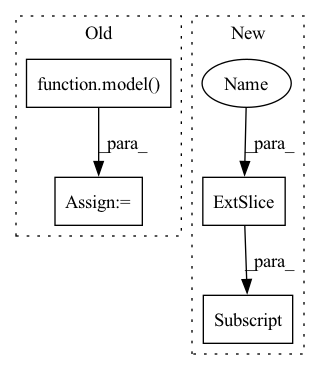

Pattern ID :38282
Before Change
outputs = []
for i in range(len(dataset)):
x = dataset[i][0].unsqueeze(0).to(device)
x = model( x)
outputs = outputs + [x,]
outputs = torch.cat(outputs, dim=0)
out_dataset = TensorDataset(outputs,labels)
print("Calibrating...")After Change
outputs = torch.zeros(tuple(outputs_shape),device=device)
for i in range(len(dataset)):
torch.cuda.empty_cache()
outputs[i,:,:,:,:] = model(dataset[i][0].unsqueeze(0).to(device))
out_dataset = TensorDataset(outputs,labels)
print("Calibrating...")
for lam in reversed(lambdas):In pattern: SUPERPATTERN
Frequency: 3
Non-data size: 4
Instances Fragment ID: 109542918
Project Name: aangelopoulos/im2im-uq
Commit Name: da2dbe136e9c04611c95c976550aa712ff4518a5
Time: 2021-06-22
Author: angelopoulos@n0024.abc0
File Name: core/calibration/calibrate_model.py
M Class Name: AnonimousClass
N Class Name: AnonimousClass
M Method Name: calibrate_model(3)
N Method Name: calibrate_model(3)
M Parent Class:
N Parent Class:
M File Name: core/calibration/calibrate_model.py
N File Name: core/calibration/calibrate_model.py
M Start Line: 58
M End Line: 68
N Start Line: 58
N End Line: 68
Before Change
comodel.eval()
// Forward
target = model( input)
target_top10 = torch.topk(target, k=10)[1][0].tolist()
// forward_steps produces same outputs
output = comodel.forward_steps(input)After Change
// forward
comodel.clean_state()
// init
for i in range(frames_per_clip):
comodel.forward_step(sample[:, :, i] )
// zero-pad end manually
zeros = torch.zeros_like(sample[:, :, 0]) Fragment ID: 109542915
Project Name: lukashedegaard/co3d
Commit Name: 0b7612c3dc839d75811d3b7ccb59a7a0b453f051
Time: 2021-08-31
Author: lh@eng.au.dk
File Name: tests/cox3d/test_x3d.py
M Class Name: AnonimousClass
N Class Name: AnonimousClass
M Method Name: test_CoX3D(0)
N Method Name: test_CoX3D(0)
M Parent Class:
N Parent Class:
M File Name: tests/cox3d/test_x3d.py
N File Name: tests/cox3d/test_x3d.py
M Start Line: 601
M End Line: 687
N Start Line: 599
N End Line: 688
Before Change
comodel.eval()
// Forward
target = model( input)
target_top10 = torch.topk(target, k=10)[1][0].tolist()
// forward_steps produces same outputs
output = comodel.forward_steps(input)After Change
// forward
comodel.clean_state()
// init
for i in range(frames_per_clip):
comodel.forward_step(sample[:, :, i] )
// zero-pad end manually
zeros = torch.zeros_like(sample[:, :, 0]) Fragment ID: 109542920
Project Name: lukashedegaard/co3d
Commit Name: 44e4624108b83f8ba94cfb960cdf74f36bbd5703
Time: 2021-09-10
Author: lh@eng.au.dk
File Name: tests/cox3d/test_x3d.py
M Class Name: AnonimousClass
N Class Name: AnonimousClass
M Method Name: test_CoX3D(0)
N Method Name: test_CoX3D(0)
M Parent Class:
N Parent Class:
M File Name: tests/cox3d/test_x3d.py
N File Name: tests/cox3d/test_x3d.py
M Start Line: 601
M End Line: 687
N Start Line: 599
N End Line: 688